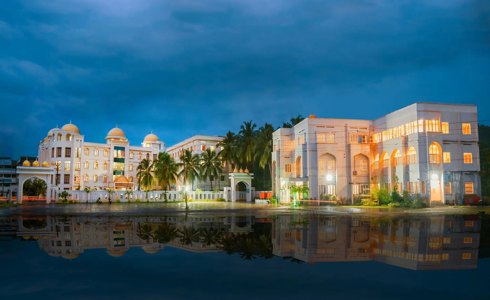

About Ma'din Academy
Ma'din Academy has over 33 educational and other institutions under its auspicies. Ma'din Academy, with 25 years since its inception, has grown enough to support and nourish numerous sections of humanity.
- Ma'din Academy (registered as Ma'dinu Ssaquafathil Islamiyya) was established in 1997 under the Societies Registration Act of 1860, has now transformed itself into a mass movement of smart learning.
- People from all walks of life and all parts of the world have been visiting us for acquire knowledge through the route of value-based education. Our various colleges and extension activites play a vital role, contributing to a progressive socitey and an enlightened culture.
- Ma'din believes in protecting orphans, uplifting the poor and needy, rehabiliting the Deaf, the Blind and the Mentally Challenged and bringing them back into the mainstream. Ma'din offers them food, shelter, education and other facilities free of cost.
Ma'din She Campus
What the students say